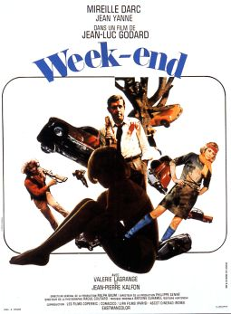

Jean-Luc Godard
1967
105 minutes
Postmodern black comedy directed by Godard. This one is definitely up your alley. The protagonists are utterly despicable selfish impulsive trash people, a scumbag bourgeois couple who each have a secret love and are scheming to murder the other, while together scheming to murder the wife's parents if necessary to hasten inheriting money from them, presumably to spend on more consumerist yuppie trash. The act of driving is a road-rage fueled hellscape where getting ahead requires being a raging asshole, and the obstacles they face in trying to do so get more and more ridiculous the farther they get. There are the usual Godard intertitles and interviews with the camera, and along the road to her parents' house they meet a bunch of historical figures and allegorical creatures. The husband eventually ends up being murdered and eaten by a group of cannibal hippies. (The cannibal hippies call themselves the Seine and Oise Liberation Front, that region essentially being the greater ring of suburbs around Paris, for additional absurdity.)
It is worth mentioning that this film (or at least the beginning) was allegedly indirectly inspired by Julio Cortázar's short story "La autopista del Sur" ("The Southern Thruway"), which depicts an absurdly long traffic jam on the way into Paris where the stranded drivers start to form miniature societies as they struggle to survive on the road, advancing only short distances at a time.
Cortázar is also known for writing Hopscotch, a work in which the individual short-ish chapters may be read in the order they are presented, in another random-seeming pre-determined order suggested by the author, or in a random order at the reader's choosing. This is true of any book, of course, but the fact that permission is given and actually encouraged at the beginning of the book plants it in the reader's head that doing so might be a good idea. You read that book in the author's alternative recommended order and it gave you an eerie feeling since you were never quite sure you were done, as well as a bit of paranoia that you were going to miss a section in all the chaotic jumping around or accidentally stray from the path and start reading things twice. That text was an indirect inspiration for the format of the text you are reading now, of course, and now that this has been mentioned you do feel a bit of anxiety that you're going to miss a lot of the content. You wonder if going through the text and consistently choosing the first option, second option, or third option might create a loop that visits every section. You wonder if the creator was thoughtful enough to pull off such a stunt and how difficult it might be to write a computer program to randomize doing so. It might explain some of the quite hazy "connections" suggested between apparently unrelated films.
You rarely drive anymore, but you do ask yourself when driving in a traffic jam whether it's prudent to always stay in the same lane or if switching lanes has any effect beyond confounding and infuriating the people behind you and possibly causing more accidents and complications to prolong everyone's misery. Not that the misery of the people behind you or the success of people in front of you matters much. It would be absurd to wish misfortune on all the people in front of you since their misfortune is your own. You have to remind yourself that you aren't stuck in traffic, you are traffic. Your very existence is part of the problem. Despite this fact, self-immolation in the middle of a traffic jam, as hard as you might try to sell it as a selfless act, is about the worst thing you could do to make it easier on the people stuck in the same situation you're stuck in.
In the beginning of the film, the dreadful woman in the couple describes to the man in explicit detail a somewhat kinky and absurd sexual encounter/fantasy with another man and a woman. Her story involves sitting in a saucer of milk, breaking eggs on her ass, and other bizarre touches. You recognize this at once as being inspired by The Story of the Eye, the porno-philosophical novella written by Georges Batailles. That novella is a Marquis de Sade-like work from the 1920s which describes a series of sexual encounters between teenage lovers who engage in weird sadomasochistic activities and break eggs on each other and pee on one another and other hijinks. They accidentally kill one of their partners and end up going on the run, taking their act on the road to a bullfight and to a church to engage further perversions.
You had no idea when you read it that it would be referenced in this film. When you initially read the work, some of the prankish childishness involved, such as sitting in a saucer of milk and breaking eggs into the toilet to see what happens, seemed like something that could be "cleaned up" to take the sex out and make it just the work of two bratty ill-behaved children getting up to hilarious hijinks. This inspired you to rewrite the entire novel. You did this by explicitly aging the characters up just to be safe, taking out all the sex and death and nudity, replacing the urination scenes with squirtguns, and introducing pet animals for the protagonists (a rooster for the young man and adorable kitties for the young ladies) to harmlessly redirect any actions taken with their genitalia in a clean manner. You published this version of the story as The Story of the Eye (Children's Version) and listed yourself as Georges Bataille's co-author on the endeavor. You dedicated the work to Beverly Cleary since the results read a bit like one of her many Ramona Quimby novels, which were a favorite of yours in grade school. Encountering the plot of the original novel here makes your world make slightly more sense.
Time to choose something different: